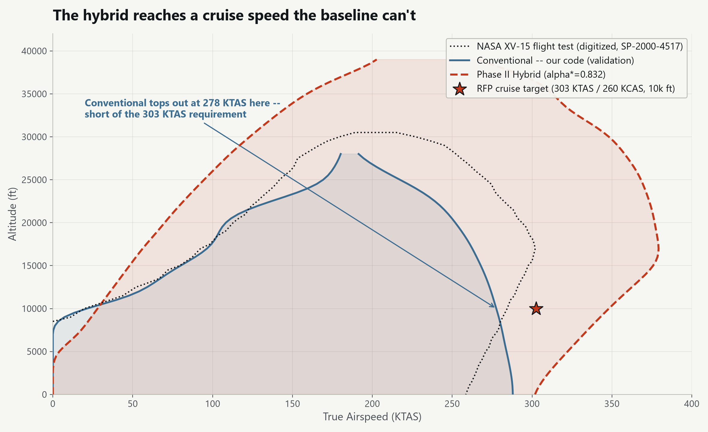

FIG. 01

Hybridized XV-15 Tiltrotor Propulsion Sizing
Aug 2025 - Present · Propulsion Architecture & Sizing LeadHybrid-electric XV-15 sizing framework, validated against real NASA flight-test data, that finds the narrow design window where hybridization actually closes the mission -- the team's VFS Student Design Competition entry, "Ibrido."
ComparedFour candidate hybrid-electric architecture topologies across a three-engineer trade study; parallel won on efficiency (1.3% conversion loss vs. 13% for series).
MethodMATLAB mission-analysis framework: rotor performance, gearbox circulating power, battery sizing, fuel-optimal per-segment RPM search, TEEM motor logic for nacelle-conversion transients. Validated the sizing code against real NASA XV-15 flight-test data before trusting the hybrid result.
ResultConverges to a narrow feasible window (engine downsizing alpha=0.83-0.84, 306 nmi, 1,203 kg payload) bounded by two different failure modes. The payoff: the hybrid clears a cruise speed (348 KTAS at 10k ft) the conventional baseline can't reach at all (278 KTAS) -- hybridization is what makes the RFP's cruise requirement achievable, not just an incremental gain.
Propulsion sub-team of three; scope here is my own sizing framework, architecture-trade contribution, and the flight-envelope/feasibility analysis, not the full team's design.